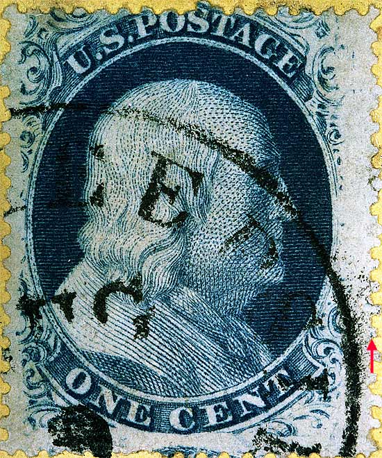
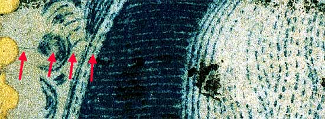
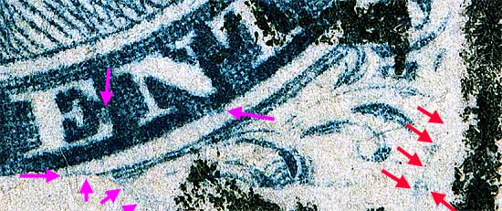
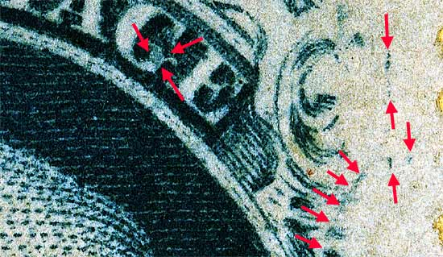
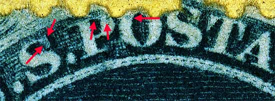

1¢ Franklin Issue of 1857-1861, PLATE 9 Pos 46L9, (Scott #24) |
| Scott #24 Blue, Type V, Relief E Issued only Perforate. The most prominent feature of Plate 9 is the fine plate scratch lines found in various places on both sides of the panes. These lines are somewhat similar to the polishing scratch marks found on Plate 8, but on Plate 9 they are not straight in many parts of the plate, and from the different directions in which they run, they have the appearance of surface cracks. Such, however was not their origin. The red arrow to the lower left is a plating mark found to the left of Ornament "G" on 47L9 |
|  |
| FIGURE 1. (Red arrows below) Very sharp scratch mark cutting across Ornament "C". This mark is poorly detailed on the Neinken plating diagram (Page 433) and can also be seen on Page 423 (Figure 20-C)
 |
| FIGURE 2. (Red arrows below) Marks as indicated in plating diagrams. The violet arrows are marks of note that require further study.
 |
| FIGURE 3. (arrows below) Blurs and splotches of color. The plating diagram shows more marks which do not reveal them selves clearly as this stamp is a poor impression.
 |
| FIGURE 4. (Below) Blurs and splotches of color per plating diagrams.
 |
DISCLAIMER and COPYRIGHT INFORMATION: Thanks for visiting this site. I hope you learn something new as we are making new discoveries all the time. You, the visitor, have my permission to link to my pages and to share the INFORMATION with others. The images themselves fall under the fair use guidelines established by the United States Congress and Copyright law. Basically contact us before using. I also ask in return that you send me an e-mail if I have made a mistake, or have made some other technical blunder that in my rush to put these pages up would cause the visitor confusion. Please also visit my other website at www.slingshotvenus.com. and support the live music arts. While your there, be sure to purchase our music. There are not many philatelic rock stars around and we need all the help we can get. :-) I can be reached at: nerdman@ix.netcom.com Update 1/18/08 |